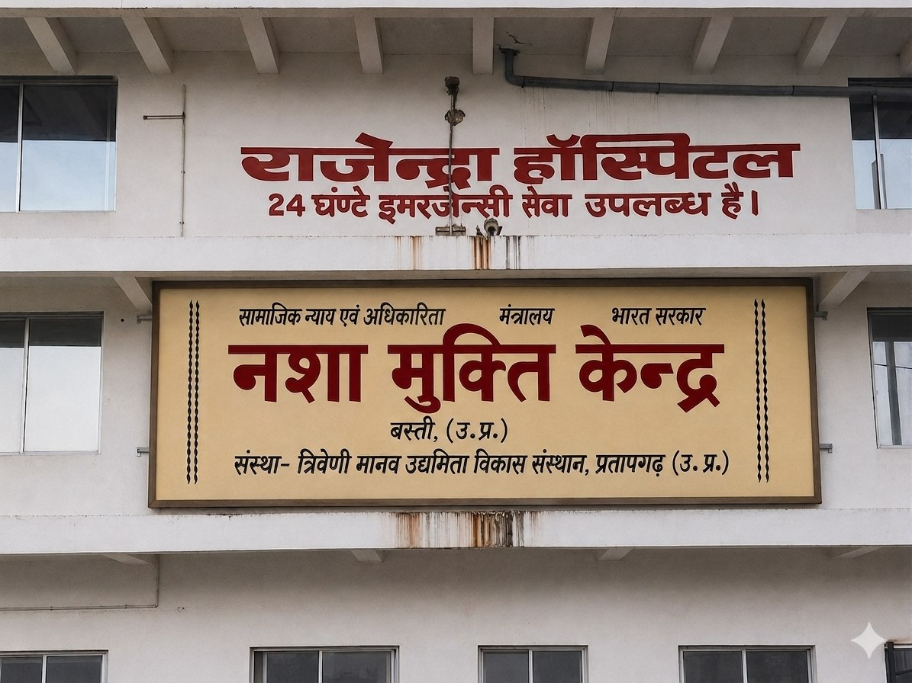

Community Welfare & Social Support:🔹Social Care & Public Support🔹Community Growth Mission🔹Social Justice & Recovery Assistance🔹Building Stronger Lives Together
Nasha Mukti Kendra
नशा मुक्ति केंद्र
📲+91-9305457578 |📩bhushanpbhup@gmail.com
Campus Rajendra Hospital, Lohri, Munderwa Marg, Basti, Uttar Pradesh
ABOUT US | हमारे बारे में
Home › About Us
Our Sansthan
Triveni Manav Uddamita Vikas Sansthan is a rehabilitation and recovery centre dedicated to supporting people in overcoming substance dependency and
rebuild life with self-respect, confidence and inner stability.
त्रिवेणी मानव उद्यमिता विकास संस्थान एक पुनर्वास और पुनर्प्राप्ति केंद्र है जो व्यक्तियों को नशे की लत से उबरने और गरिमा, आत्मविश्वास और भावनात्मक संतुलन के साथ जीवन
का पुनर्निर्माण करने में मदद करने के लिए प्रतिबद्ध है।
Our Mission | हमारा लक्ष्य
To provide effective de-addiction treatment, counselling, rehabilitation services and awareness support so individuals can return to a healthy and meaningful life.
प्रभावी नशामुक्ति उपचार, परामर्श, पुनर्वास सेवाएं और जागरूकता सहायता प्रदान करना ताकि व्यक्ति स्वस्थ और सार्थक जीवन में लौट सकें।
Our Vision | हमारा नज़रिया
To build an addiction-free society where people receive timely help, families get guidance and every recovered person lives with self-respect.
एक ऐसे व्यसन-मुक्त समाज का निर्माण करना जहां लोगों को समय पर सहायता मिले, परिवारों को मार्गदर्शन मिले और प्रत्येक ठीक हुआ व्यक्ति आत्मसम्मान के साथ जीवन व्यतीत करे।

Rehabilitation Support • Structured Care • Community Wellness
Our Values | हमारे मूल्य
Compassionate behaviour with every resident
प्रत्येक व्यक्ति के साथ संवेदनशील और सम्मानजनक व्यवहार
Long-term recovery, not temporary relief
अस्थायी राहत नहीं, बल्कि स्थायी सुधार पर ध्यान
Awareness against social stigma
नशा मुक्ति के प्रति समाज में जागरूकता फैलाना
Structured discipline with emotional understanding
भावनात्मक समझ के साथ अनुशासित जीवनशैली
Positive environment for emotional healing and confidence building
मानसिक सुधार और आत्मविश्वास बढ़ाने के लिए सकारात्मक वातावरण
Guidance for healthy routine and addiction-free lifestyle
स्वस्थ दिनचर्या और नशामुक्त जीवनशैली के लिए मार्गदर्शन
Family counselling and relapse-control support
पारिवारिक काउंसलिंग और दोबारा नशे से बचाव हेतु सहयोग
Our Philosophy | हमारी विचारधारा
Recovery through professional care, counselling and emotional support
व्यावसायिक देखभाल, परामर्श और भावनात्मक सहयोग से बेहतर स्वास्थ्य लाभ
Trust, positivity, safety, discipline and healthy guidance for better living
विश्वास, सकारात्मक वातावरण, सुरक्षा, अनुशासन और उचित मार्गदर्शन से बेहतर जीवन
Dedicated rehabilitation programs focused on long-term wellness and stability
दीर्घकालिक स्वास्थ्य और स्थिरता पर आधारित समर्पित पुनर्वास कार्यक्रम
Supportive community environment encouraging confidence, responsibility and self-growth
आत्मविश्वास, जिम्मेदारी और आत्मविकास को प्रोत्साहित करने वाला सहयोगी वातावरण
What Makes Us Reliable
🤝
Family-Like Support
परिवार जैसा सहयोग
We create an environment where patients feel heard, supported and motivated.
🧠
Mind & Behaviour
मन और व्यवहार
Counselling focuses on triggers, habits, emotional pain and decision-making.
🛡
Privacy First
गोपनीयता पहले
Every case is handled with confidentiality, self-respect and careful communication.
🎯
Goal-Oriented Care
लक्ष्य-उन्मुख देखभाल
Recovery plans focus on stability, confidence, routine and future planning.